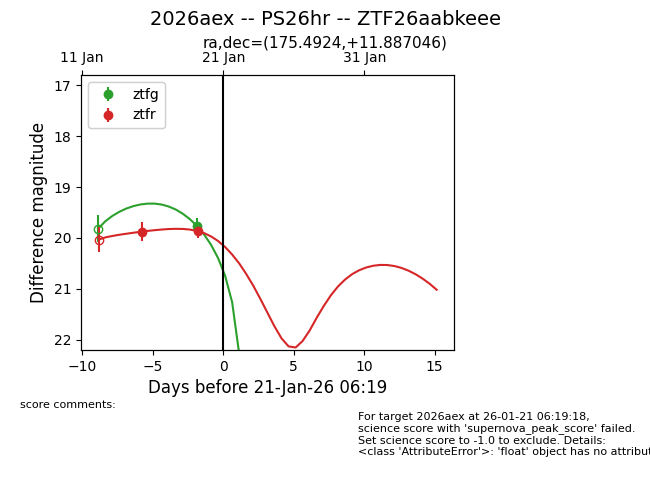
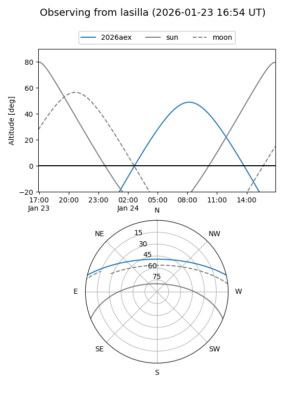
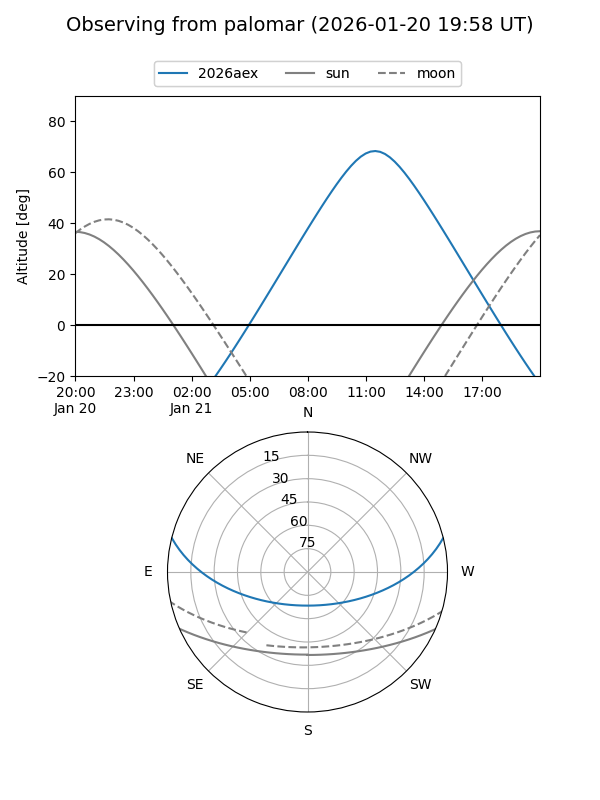
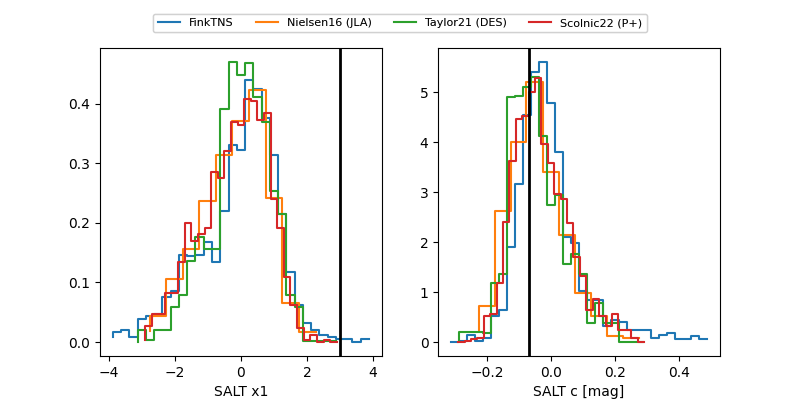

2026aex
Target 2026aex at 2026-01-25 22:06
Aliases and brokers:
FINK: link
Lasair: link
ALeRCE: link
TNS: link
YSE: link
alt names
ZTF26aabkeee (ztf,fink_ztf)
2026aex (tns,yse)
PS26hr (panstarrs)
Coordinates:
equatorial (ra, dec) = 175.4924,+11.88705
equatorial (HMS+DMS) = 11:41:58.18,+11:53:13.37
galactic (l, b) = (252.6369,+67.68721)
Flags:
Photometry:
last ztfg=19.82, ztfr=19.87
2 ztfg, 2 ztfr detections
Lightcurve

Visibility


Additional plots
